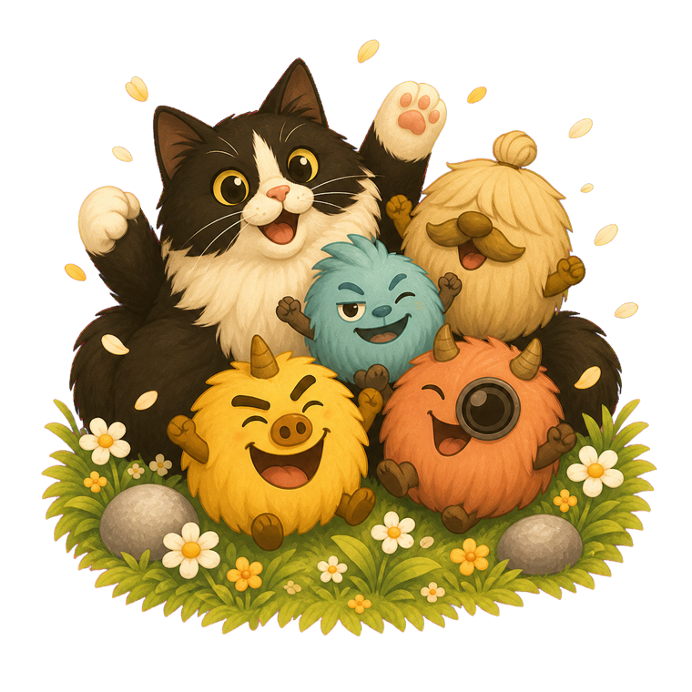
World 1
Hairball Hills
Where the journey begins among flowers and soft green hills.花とやわらかな丘から、冒険がはじまります。

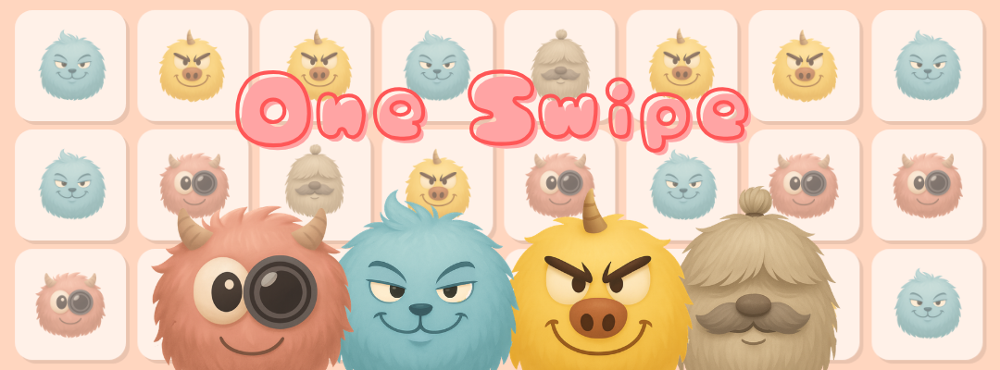
Find the one swipe that clears them all. 「全消し」へ導く、たった一手を見つけよう。
One Swipe is a one-move puzzle adventure starring the Hairball Friends. Look closely, swap two neighboring characters only once, and let the perfect move ripple across the board. One Swipeは、Hairball Friendsとめぐる一手完結のパズルアドベンチャー。盤面をじっくり見て、隣り合うキャラクターを入れ替えられるのは一度だけ。ひらめきの一手から連鎖を起こし、「全消し」を目指します。
A world beyond the board盤面の向こうに広がる世界
Complete twenty stages in each world and travel onward with Snuffy and the Hairball Friends. Every destination has its own colours, costumes, and celebration.各ワールドの20ステージをクリアして、スナちゃんとHairball Friendsと一緒に次の世界へ。景色も衣装も、クリアしたときのお祝いも、行き先ごとに変わります。

Where the journey begins among flowers and soft green hills.花とやわらかな丘から、冒険がはじまります。
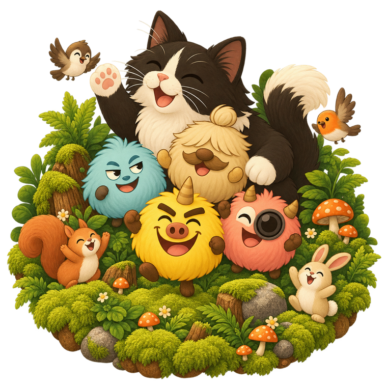
A lantern-lit woodland full of tiny discoveries.ランタンの灯る森で、小さな発見を探そう。
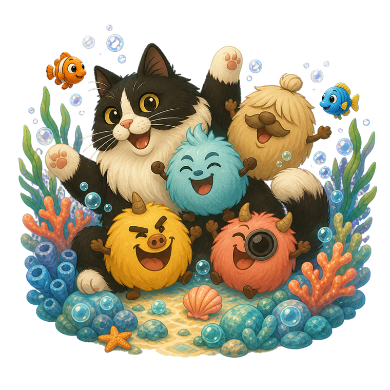
Bubbles, coral, and an underwater celebration.泡とサンゴに包まれた、海の中のお祝い。
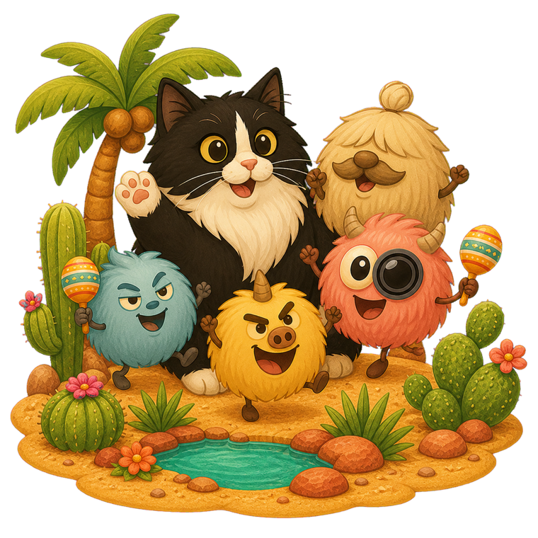
Follow the rhythm across a sun-warmed desert.太陽の砂漠を、陽気なリズムと進もう。
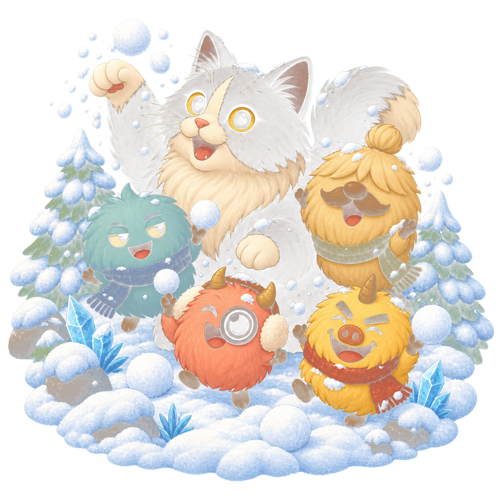
Snowballs, sparkling ice, and very warm friends.雪玉ときらめく氷、そしてあたたかい仲間たち。
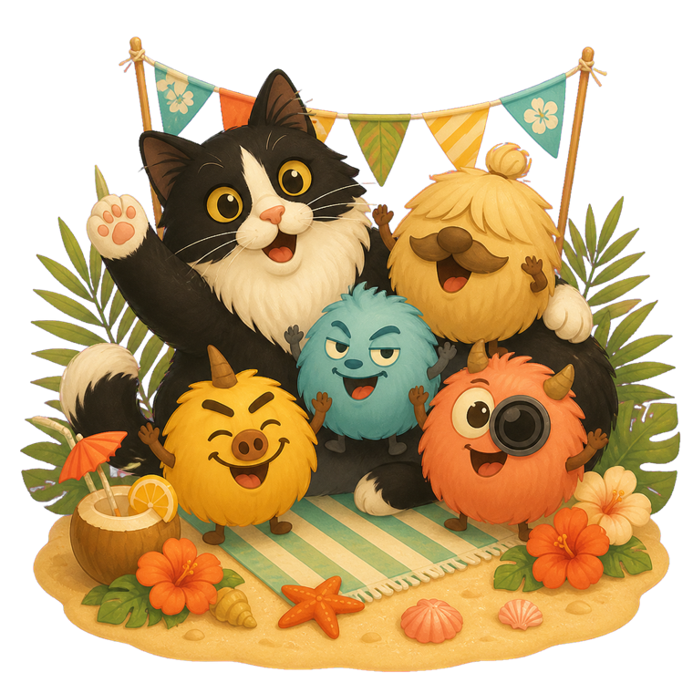
A bright seaside break before the next challenge.次の挑戦の前に、明るい海辺でひと休み。
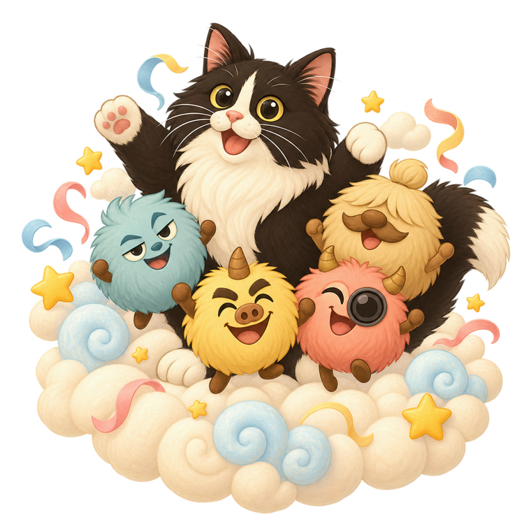
Drift through clouds, stars, and a sky-high adventure.雲と星のあいだを進む、空いっぱいの冒険。
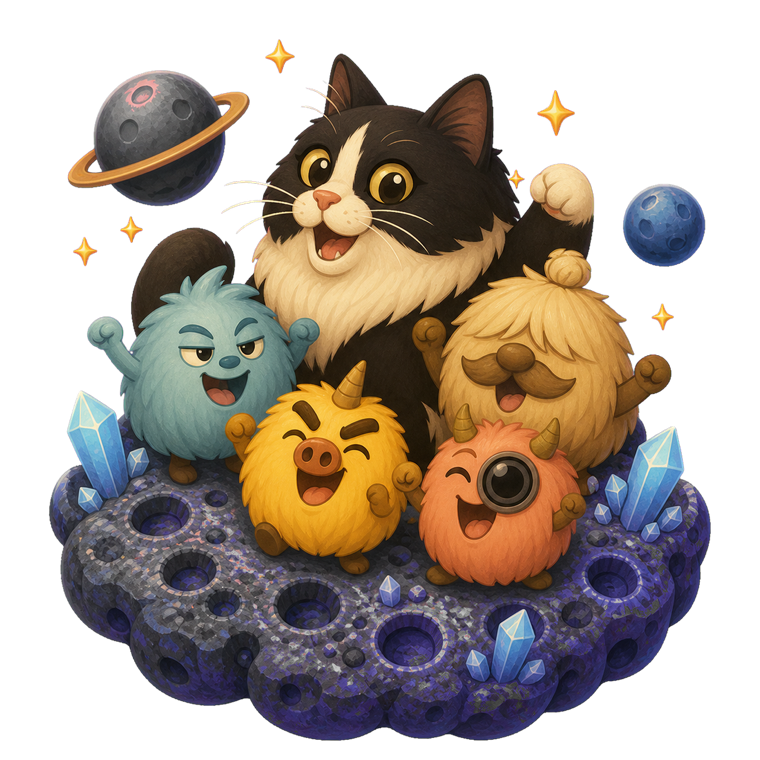
The final puzzles wait among planets and crystals.惑星とクリスタルの先に、最後の難問が待っています。
Red, red, blue, red. Swap the last two tiles and the three red Hairball Friends line up. 赤・赤・青・赤。最後の2つを入れ替えると、赤のHairball Friendsが3体そろいます。
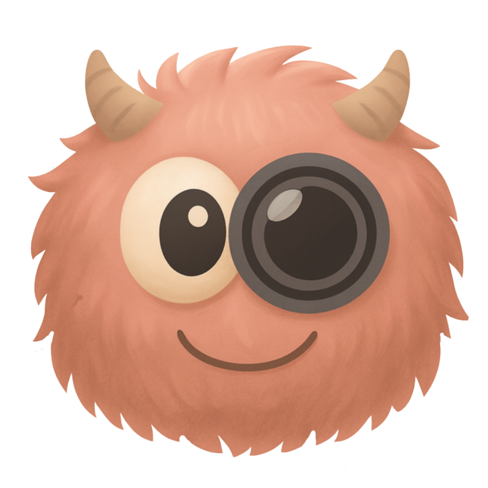
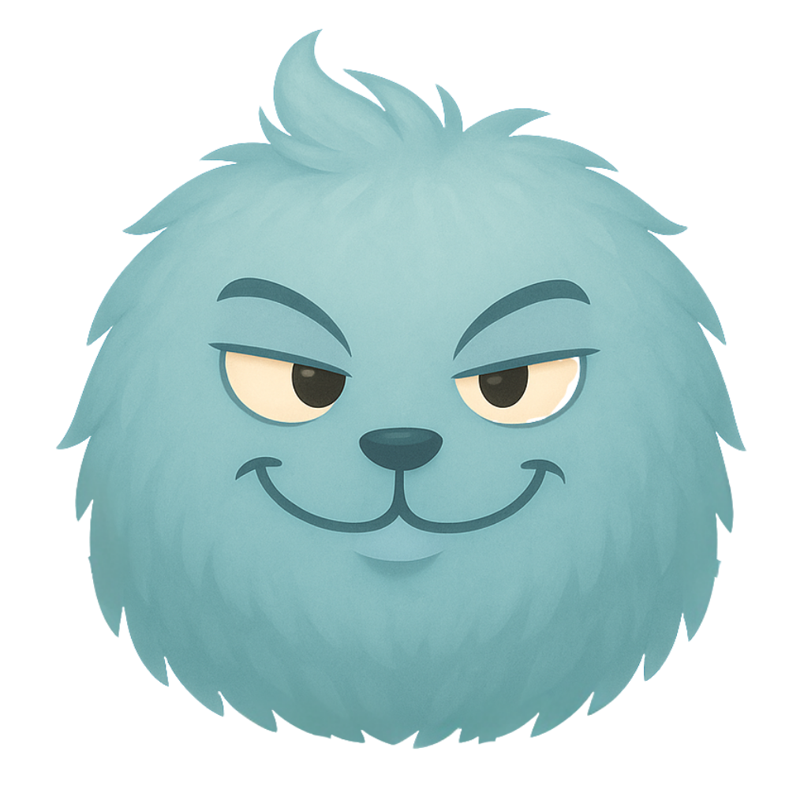
One swipe → Complete clear!一手のスワイプから、全消しへ！
Made for thoughtful playじっくり楽しむために
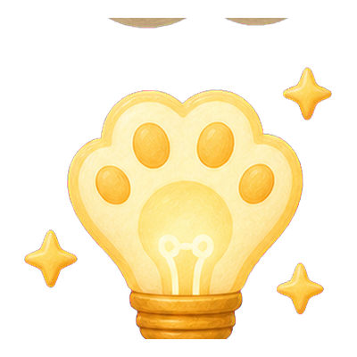
When you need a nudge, reveal one side—and then both sides—of the winning swap.迷ったときは、正解の一手を片側ずつ教えてくれます。
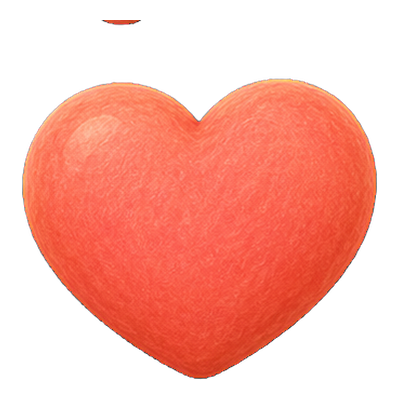
Hint hearts recover over time, so you can leave a puzzle and return with fresh eyes.ヒント用のハートは時間とともに回復。ひと休みしてから、また挑戦できます。
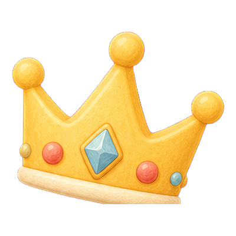
Clear twenty stages to unlock a new destination and a new portrait of the whole gang.20ステージをクリアすると、新しい世界と仲間たちの集合絵が解放されます。
Hairball Friends
Muffuffu, Fuffuffu, Baffuffu, and Moffuffu turn every chain reaction into a little performance. Snuffy is never far away.Muffuffu、Fuffuffu、Baffuffu、Moffuffu。連鎖のたびに個性豊かな表情を見せてくれます。もちろん、スナちゃんも一緒です。
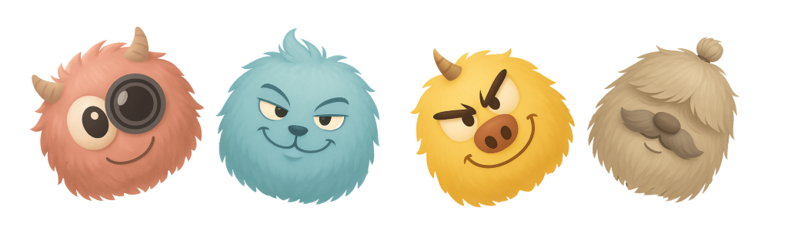
Every level has one answer hidden in plain sight. Find the decisive move, watch the chain unfold, and enjoy the quiet satisfaction of a complete clear.どのステージにも、盤面の中にひとつの答えが隠れています。決め手となる一手を見つけ、連鎖を見届け、すべてが消える静かな爽快感をお楽しみください。